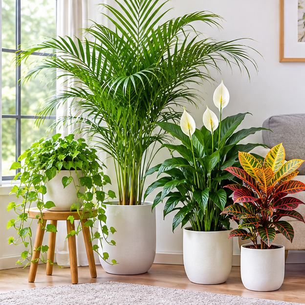

Bring a little nature indoors

Indoor plants can make a room feel calm, welcoming and full of life. You do not need a large garden or special equipment to get started. A bright corner, a suitable pot and a little regular care are enough for many beginner-friendly plants.
Green Corner shares simple ideas to help you choose plants and understand what they need. Start small, observe your plants and enjoy learning as they grow.
Why grow indoor plants?
- Add natural colour and texture to your room.
- Make decorating your home more enjoyable.
- Build a relaxing hobby at your own pace.
- Learn to care for another living thing.
Beginner tip: Start with one or two easy-care plants instead of buying many at once.